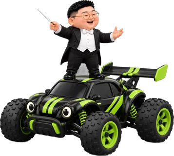
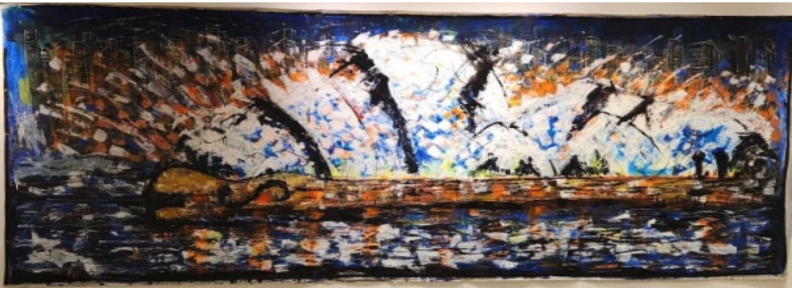
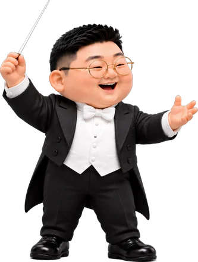

한 번의 연주가 한 장의 그림이 되었습니다.


함께하는 기록
김종훈 작가의 첼로 소리와 그림으로 함께 만드는 기록입니다. 칸을 깨우고, 선을 긋고, 함께 노를 저어 주세요.

한 번의 연주가 한 장의 그림이 되었습니다.


김종훈 작가의 첼로 소리와 그림으로 함께 만드는 기록입니다. 칸을 깨우고, 선을 긋고, 함께 노를 저어 주세요.
칸을 눌러 보세요. 칸마다 첼로의 낮은 소리가 하나씩 들어 있습니다.